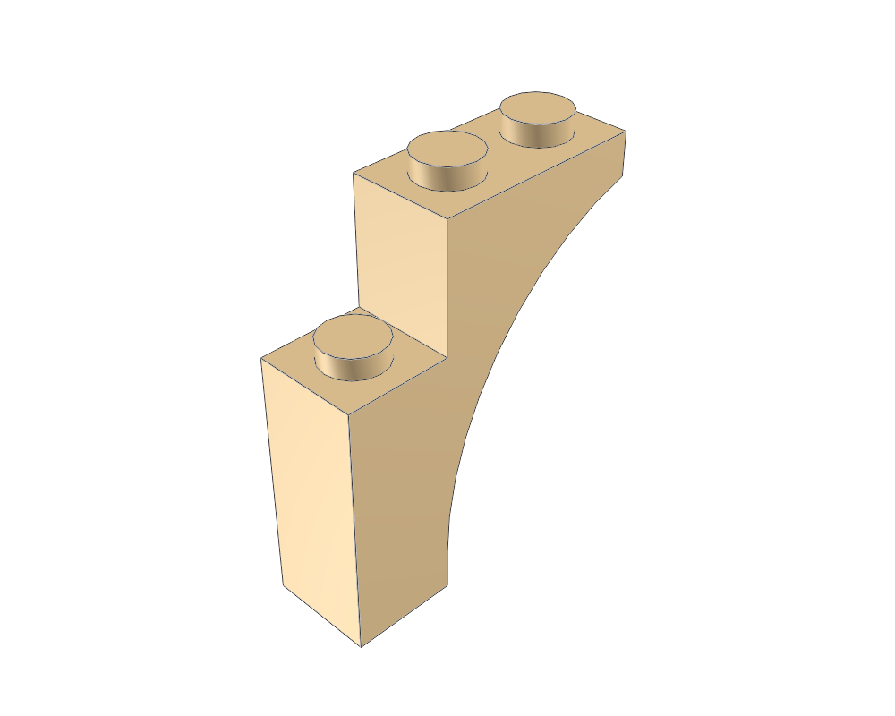
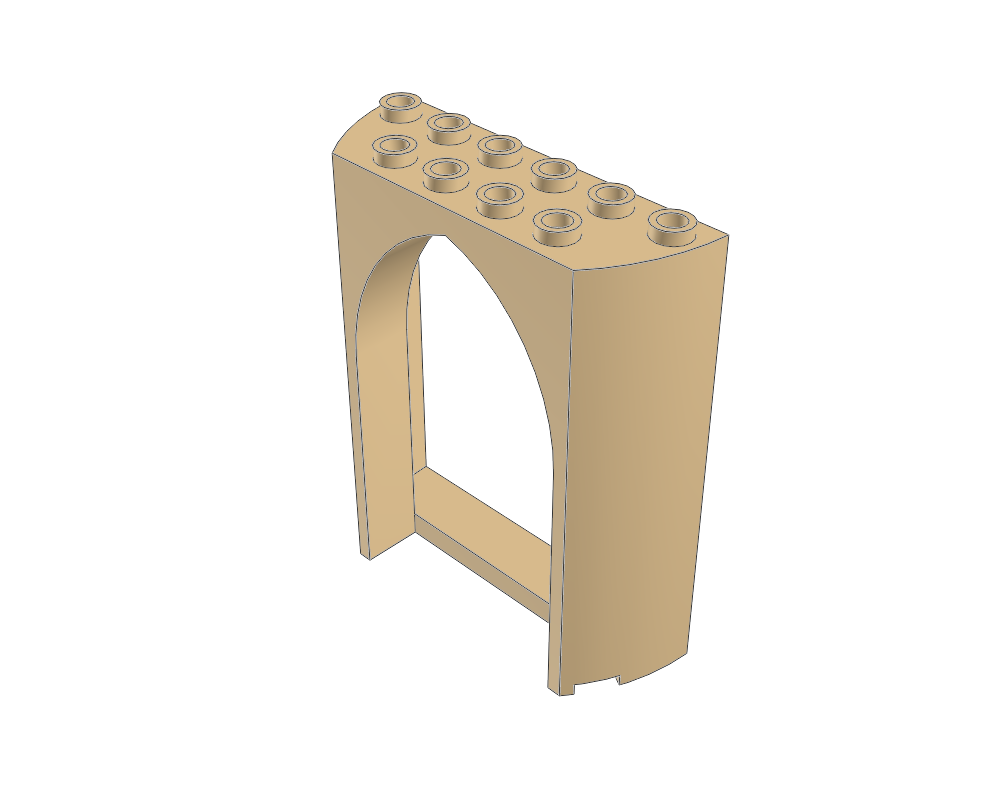
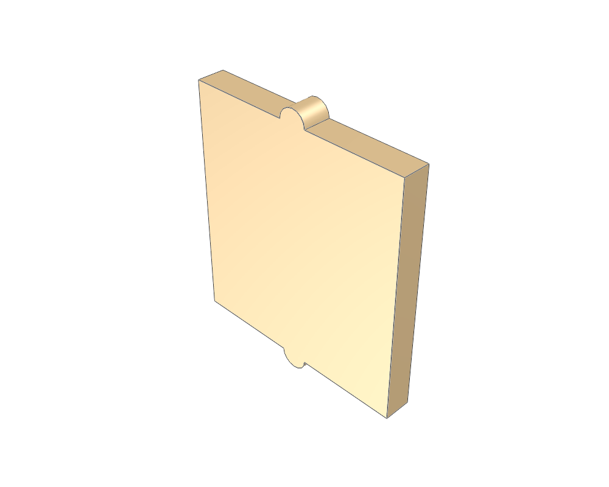
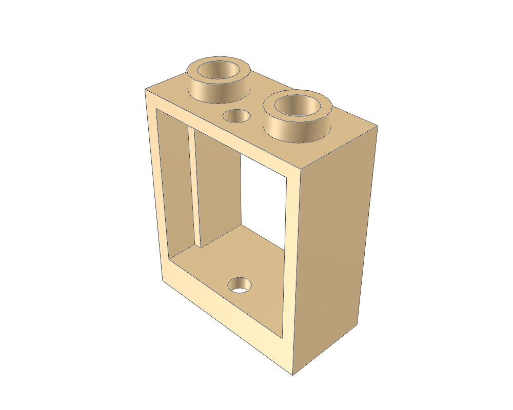
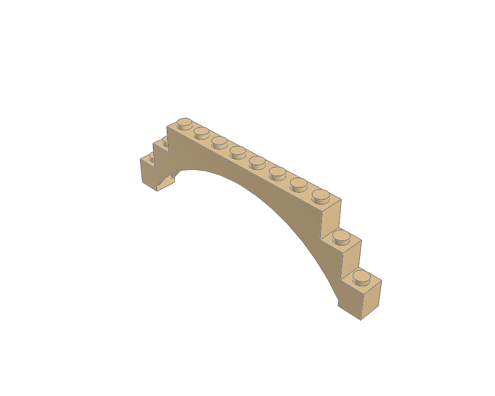

Arch 1 x 3 x 3 Pointed
13965.dat13965.dat · 20 × 76 × 60 LDU
Inspect sourceActual library geometry. Each view is fitted independently: compare the listed dimensions, not image size. Bounds include studs and decoration; they are not stacking heights.

13965.dat13965.dat · 20 × 76 × 60 LDU
Inspect source
35565.dat35565.dat · 120 × 148 × 40 LDU
Inspect source
60601p01.dat60601p01.dat · 33 × 39 × 4 LDU
Inspect source
60592.dat60592.dat · 40 × 52 × 20 LDU
Inspect source
18838.dat18838.dat · 240 × 76.0005 × 20 LDU
Inspect source